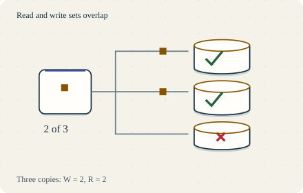

Go deeper · 7 minutes
Copies and quorums
Copies tolerate failures when placement, acknowledgements and repair match the promise.
Open this lesson
The copy that missed a write
Three replicas hold a delivery address. One is offline when the address changes. The next read reaches that copy first. More copies improved durability, but the answer is old. A replication factor names how many copies should exist. A read or write quorum names how many replies an operation must wait for.
What overlap proves
Choose a fixed replica set and read/write reply counts. Stop a replica, write, then ask the oldest reachable copies. Overlap guarantees a shared responder only under the assumptions below.
Worked example: a zone goes dark
Replica trips can happen in parallel. The write waits for its required responders, not the sum of every trip. Quorum overlap depends on fixed membership and version reconciliation; it does not by itself prove linearizability. The traffic engine does not reproduce individual acknowledgements.
Failure boundary
- 3 zones, 3 replicas: R = 2 and W = 2 need both survivors after losing one replica. W = 3 cannot complete.
- Local + remote: 2 ms durable work + 3 ms remote round trip gives a rough 5 ms floor.
- Cross a region: An 80 ms trip gives about 82 ms before queueing. Parallel fan-out does not sum every replica trip.
Repair is scheduled work
Read repair fixes versions encountered by reads; a quiet record may never be read. Hinted handoff remembers missed writes for a bounded time and consumes disk. Neither replaces anti-entropy repair of all ranges. Repair within the deletion-retention window. A replica absent beyond it may need rebuilding to prevent a purged tombstone from resurrecting data. Verify every affected range and keep repair below the bandwidth that harms foreground requests.
Repair competes for capacity
- Detect a gap: Compare versions and checksums; a live replica can still be stale.
- Budget repair traffic: Keep disk and network headroom for foreground requests.
- Verify convergence: Track oldest gap, bytes remaining and failed repairs.
Key numbers
- Quorum intersection
- ≈ 1 replica minimum. R + W - N = 2 + 2 - 3
- Zone write floor
- ≈ 5 ms. 2 ms durable work + 3 ms remote RTT, illustrative
- Physical payload
- ≈ 30 TB. 10 TB logical × replication factor 3, before indexes
Check your reasoning
Think through these questions before opening the lesson. In the game you can test the idea and compare your reasoning.
- With fixed N = 3, R = 1 and W = 2, one replica missed a completed write. What does the next read guarantee?
- R plus W is bigger than N. Why will you not promise linearizability yet? Follow-up: two writers race.
- Fixed N = 5, R = 3, W = 3. Two replicas are unreachable. Which operations can still meet these counts?
- Can we lower cross-zone write latency by acknowledging only the local copy? Follow-up: that zone disappears.
- A replica missed writes after its hints expired. Tombstones still cover the outage. What establishes that cold keys are current?
The key point
Name the replica set, acknowledgement count, failure model and reconciliation rule together.
Practise this idea
- Hard
Object storage service
Customers store billions of files, from tiny pictures to huge videos, and fetch them by name. The service must never lose a file, scale without a limit and stay cheap. Most files are written once and rarely read again.
- Hard
Bank ledger
You run the system of record for a regional bank: every deposit, withdrawal and card settlement is a posting that must be exact and permanent. Customers in two continents read balances all day, and regulators can ask for proof at any time. A bad day for you is a loss of even one posting.
- Hard
Metrics for many customers
Build one metrics platform for 5,000 customers. A tenant can create millions of series or run a costly month-long query by mistake. Your design must preserve useful ingestion and query service for the other tenants, and show the offending customer a clear limit rather than an unexplained gap.